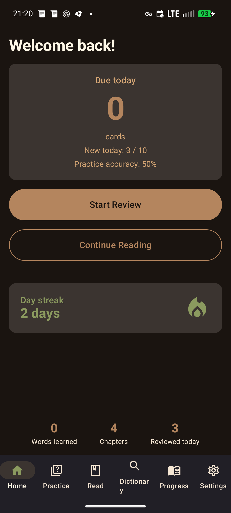
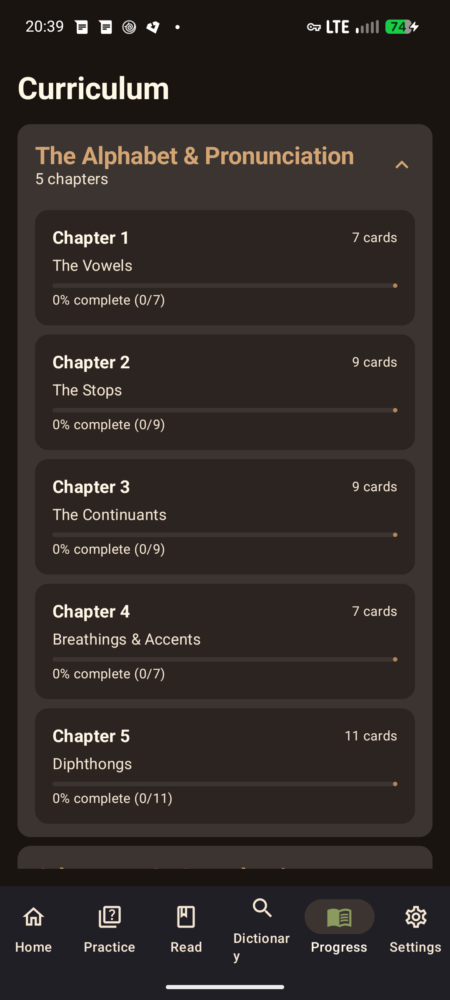
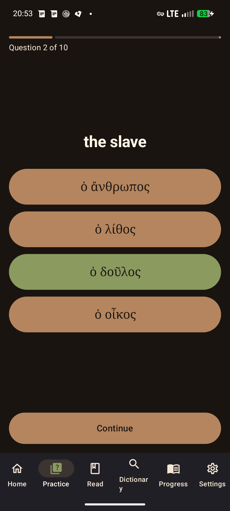
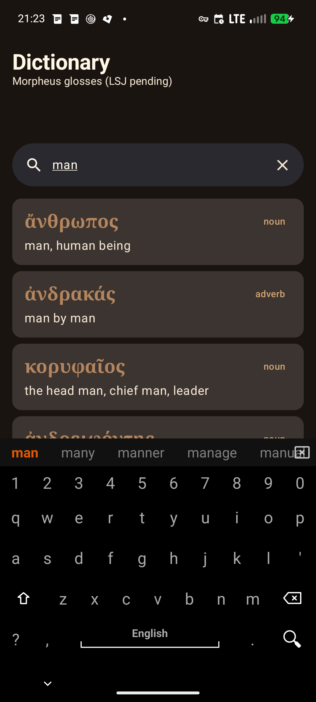

Greek
Read Ancient Greek, not flashcard gimmicks.
An offline-first Android app for learning Ancient Greek — a Rust core, a real FSRS scheduler, an alphabet-first curriculum that proves you can read the script before feeding you vocabulary, and optional encrypted sync you control.
FSRS-paced review
Real FSRS (not a spaced-repetition cosplay): full per-rating next-state computation at 90% desired retention, interval previews on every rating button, sub-day learning steps so a missed card comes back the same session — and a cap of 10 new cards a day so you never drown.
Alphabet-first
Vocabulary stays locked until you can actually read the letters: a 43-card letters track across 5 chapters, then the Alphabet Check — 24 questions, pass with 22 or more. Already know the script? The check is your 3-minute placement test.
100% local-first
No accounts, no analytics, no crash reporting. Everything lives in an on-device SQLite database. Optional sync between your own devices is end-to-end encrypted — the relay never sees your data.
See it working
Real screenshots from a Pixel 6 (Android 17), October 2026.





Get the app
Zapstore
Our store listing on zapstore.dev, the nostr-native app store, is in progress — not live yet. Once it lands: search Zapstore for Greek (publishing imminently).
GitHub Releases
Universal APK — signed, ~92 MB, works on any 64-bit Android 8.0+. 16 KB page-size ready (future-proofed for the latest Android memory-page requirement).
Install directly from your phone's browser: open the APK and allow installing from your browser when Android asks. Minimum Android 8.0 (SDK 26); arm64 and x86-64 included in one build.
Build from source
Rust core + Android APK (click to expand)
Requirements: Rust toolchain, JDK 17+, Android SDK (compileSdk 35). The Gradle wrapper (8.14.3) downloads itself.
# 1. Core library and tests
cargo build
cargo test --workspace
# 2. Android APK (preBuild syncs data/cards/*.json and data/morphology.sqlite into assets)
cd android
./gradlew assembleDebug
# debug APK lands in android/app/build/outputs/apk/debug/
If you want to rebuild the native libuniffi_bindings.so libraries
(arm64-v8a, x86_64) yourself you need the Rust Android NDK targets; see
android/README.md in the repository for details.